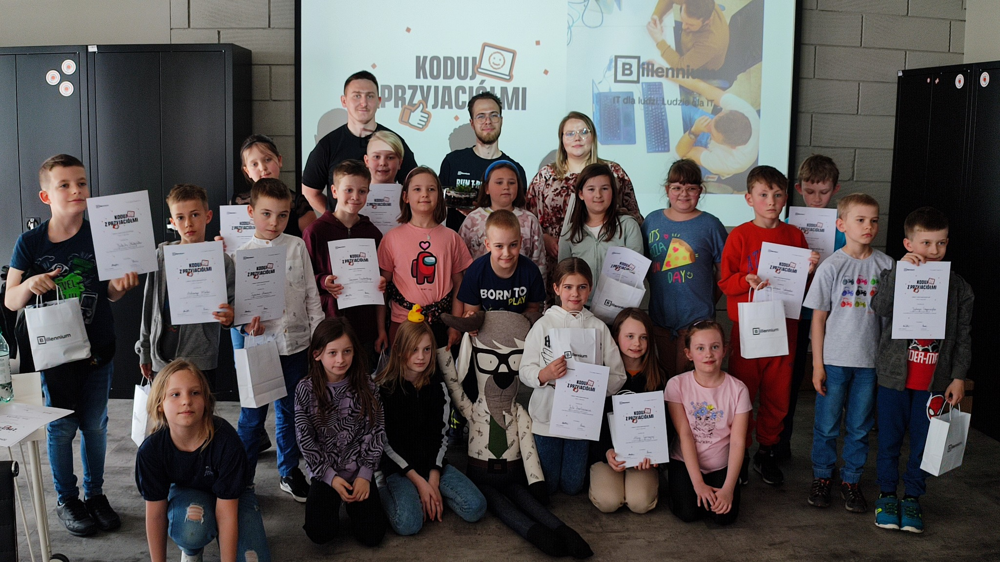

Welcome to Flask API
Wraz z Adrianem jesteśmy ambasadorami w firmie Billennium, niedawno mieliśmy przyjemność być prezenterami na warsztatach! Odwiedziły nas Dzieciaki ze Szkoły Podstawowej nr 58 w Lublinie, przygotowaliśmy dla nich specjalny warsztat z podstaw programowania w Scratch'u. Nasi uczestnicy i uczestniczki poradzili sobie rewelacyjnie, nawet z najtrudniejszymi zadaniami, co było naprawdę fantastycznym dowodem na ich umiejętności 👏😍
